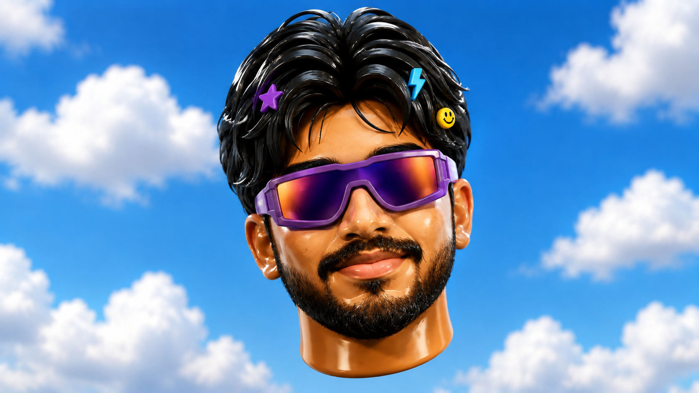

Operon
An AI workflow automation platform with tool calling, bounded actions, execution logging, error handling and deployment-ready backend architecture.
Python · FastAPI · AICase study ↗

I build AI products, automate workflows, and obsess over the weird intersection of technology, performance, music and creativity.
The portfolio is a snapshot of what I build and what makes me tick — technical work on one side, human curiosity on the other.
Short version now. Each card is structured to become a full case study later: problem → architecture → implementation → challenges → results → demo.
An AI workflow automation platform with tool calling, bounded actions, execution logging, error handling and deployment-ready backend architecture.
A retrieval-augmented product built around Indian-language / knowledge workflows, evolving toward a richer UI and reason-based LLM experience.
A movement-focused MMA teaching app exploring pose estimation and training feedback.
Containerized CI/CD with GitHub Actions, Docker, SonarQube, Trivy and Prometheus — built to make deployment repeatable and observable.
Detailed project pages can slot into this exact structure without redesigning the site.
Problem → Architecture → Implementation → Challenges → Results → Demo
Problem → Architecture → Implementation → Challenges → Results → Demo
Problem → Architecture → Implementation → Challenges → Results → Demo
A deliberately practical stack: build the backend, wire the intelligence, ship it, measure it.
Python, FastAPI, REST APIs, SQL/PostgreSQL, Git/GitHub, Docker and deployment fundamentals.
RAG, LLM integrations, tool calling, workflow orchestration, retrieval and evaluation.
GitHub Actions, Vercel / Render, observability, security scanning and clean documentation.
Hackathons, project shipping, technical experimentation and learning by actually putting systems in the hands of users.
The point of this section is to make the portfolio feel like a person, not a résumé with gradients.
One version is optimized for technical hiring. The other shows the creative side of the builder behind the code.
Drop me a message, send a project, or just say hi. The dancing miniature and soundtrack slot into this section when the final assets are ready.